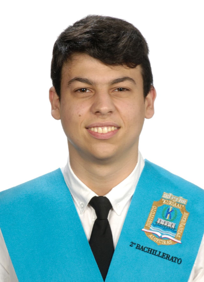

About Me

I'm Daniel Carrasco García, a Computer Engineering student at the University of Málaga, with a deep passion for technology, software development, and building practical solutions to real-world problems. My approach blends academic rigor with a proactive attitude toward technical challenges and collaborative projects.
Throughout my studies, I've gained experience in languages such as Java, C++, Python, HTML, CSS, and Arduino, and worked on areas including web development, unit testing with JUnit and Mockito, algorithm design, coding theory, low-level programming with RISC-V, and computer architecture simulation using Logisim. I've also participated in projects involving artificial intelligence and financial analysis, such as algorithmic crypto trading strategies.
I'm known for being a team player, a curious learner, and a strong advocate for writing clean, maintainable, and elegant code. I've built applications and academic projects applying SOLID principles, design patterns, and testing best practices. I'm proficient with tools like Docker, Maven, IntelliJ IDEA, and GitHub, and have developed full-stack projects with Flask and Angular.
I'm a native Spanish speaker, hold a C1 level in English, and an A2 in French, allowing me to collaborate in international environments. I graduated with honors in high school and am always looking for new opportunities to learn, innovate, and contribute to impactful projects.